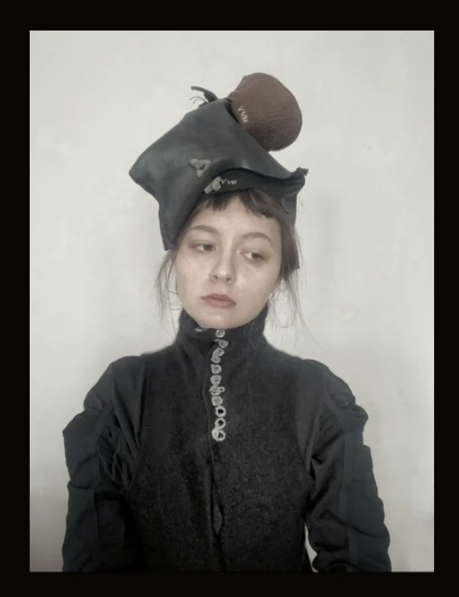

Текстильне мистецтво
Handgenähte Kopfbedeckungen
2026 · Шкіра, об'єкти ручного шиття
Темний шкіряний капелюх з круглим верхом на кшталт ґудзика, вдягнений з одягом із високим коміром на ґудзиках.
Надіслати запит Вероніка Горицька
Вероніка Горицька

2026 · Шкіра, об'єкти ручного шиття
Темний шкіряний капелюх з круглим верхом на кшталт ґудзика, вдягнений з одягом із високим коміром на ґудзиках.
Надіслати запит